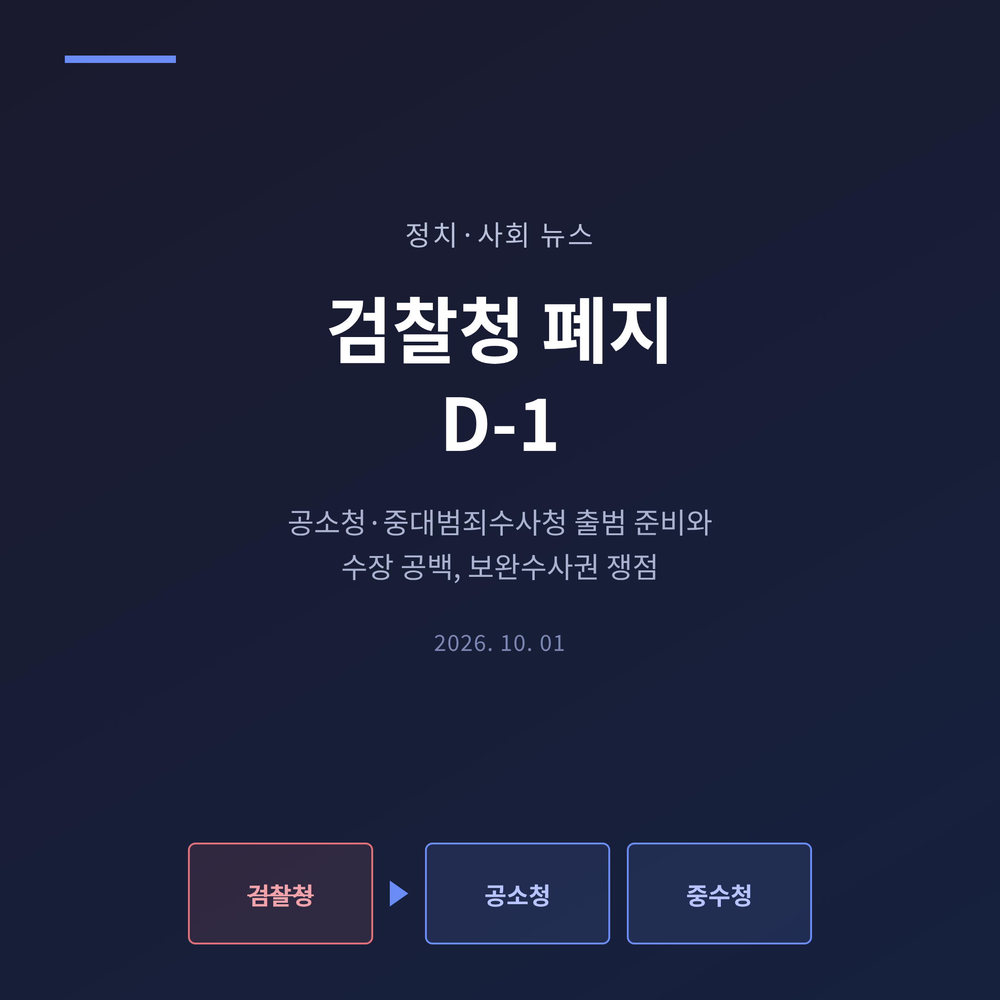
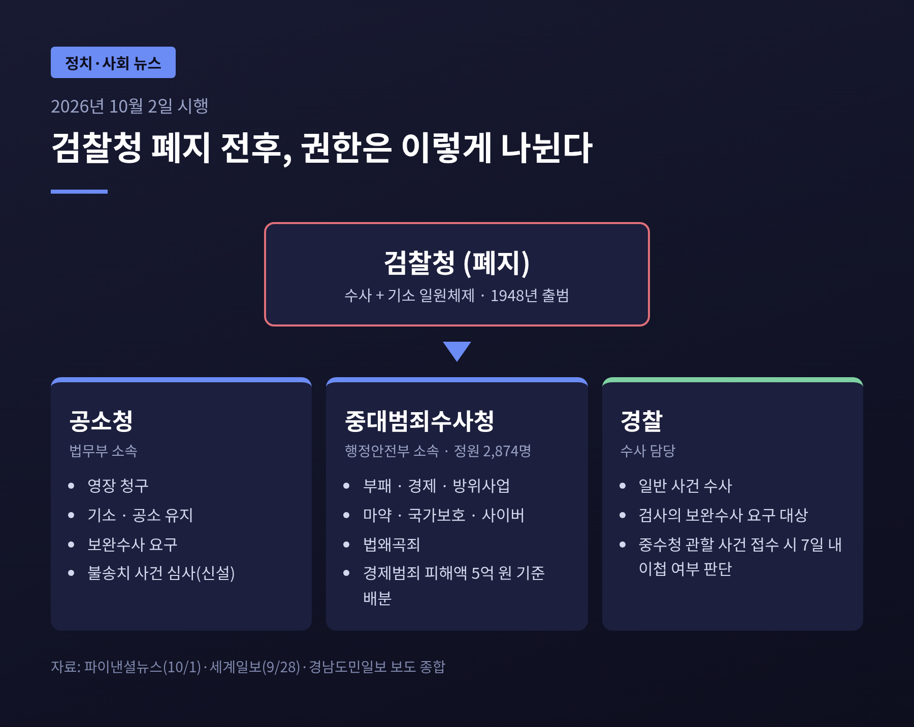
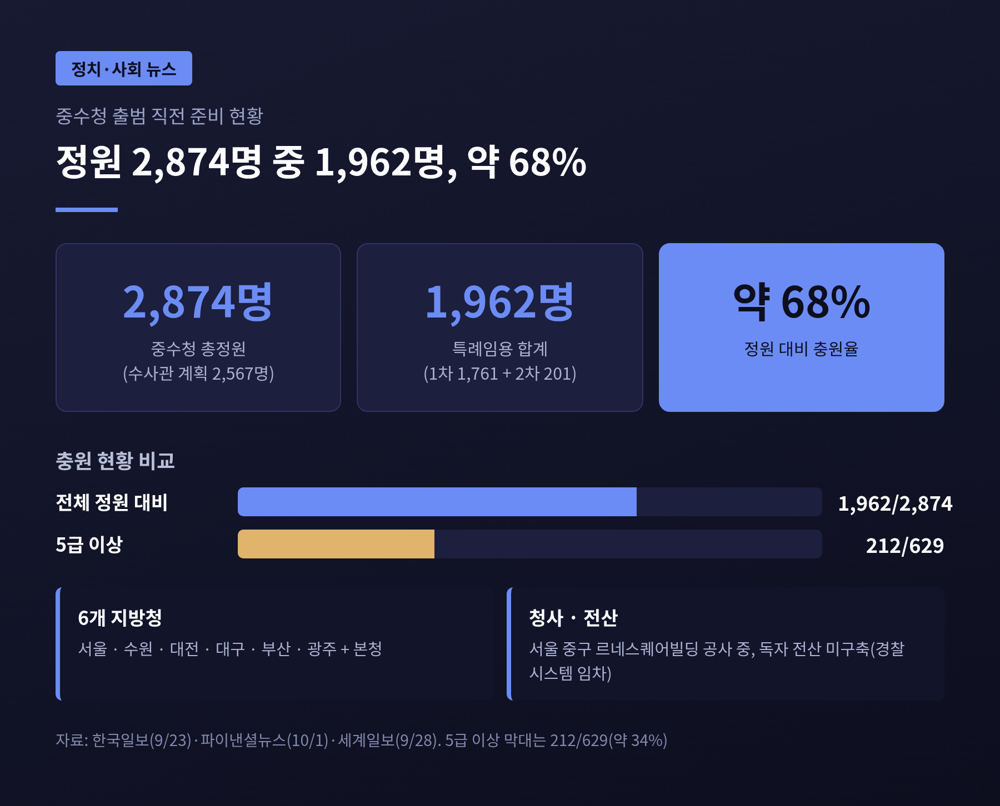
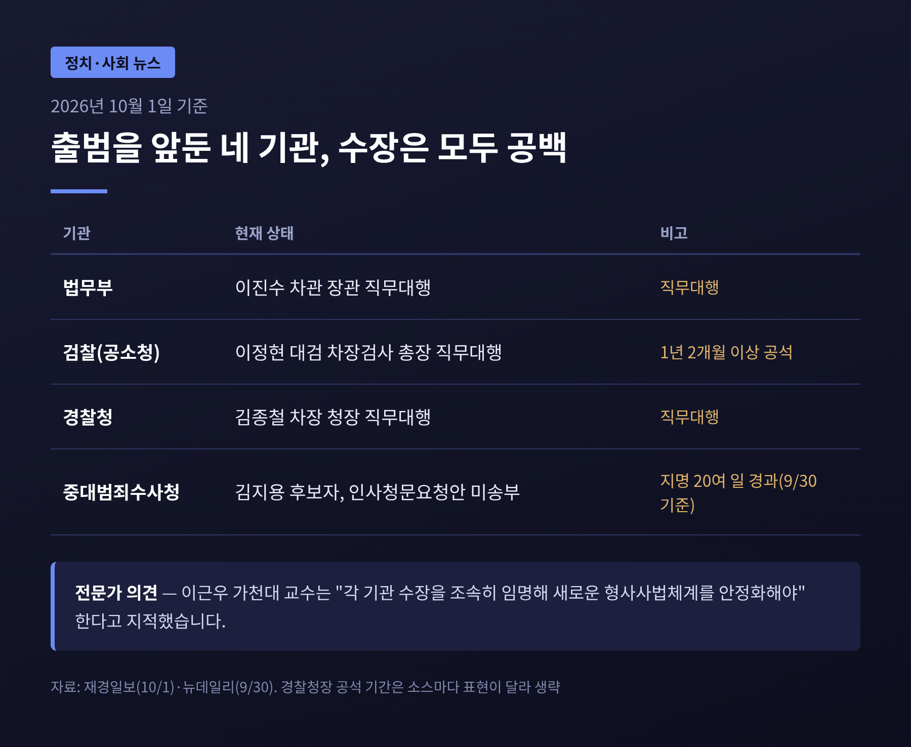
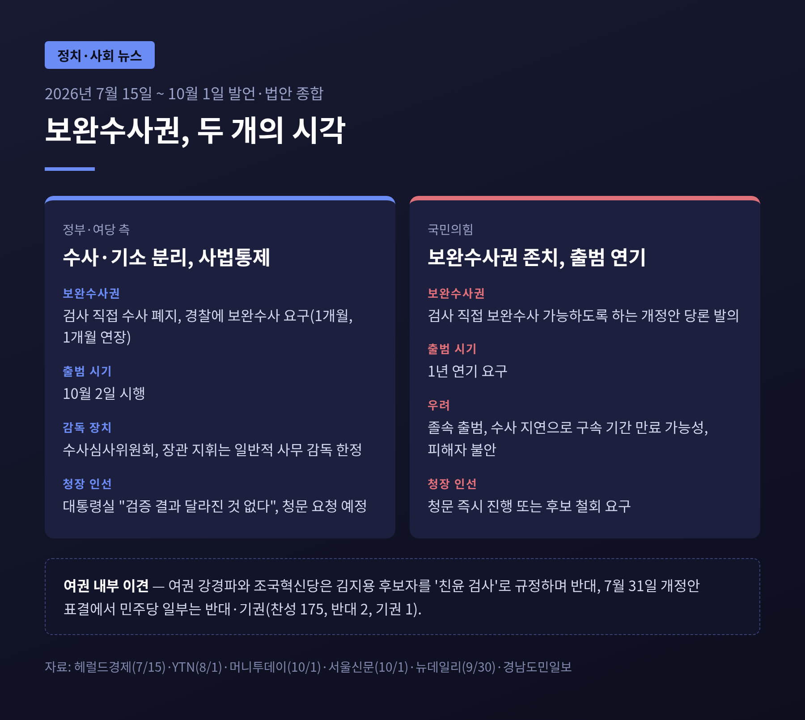
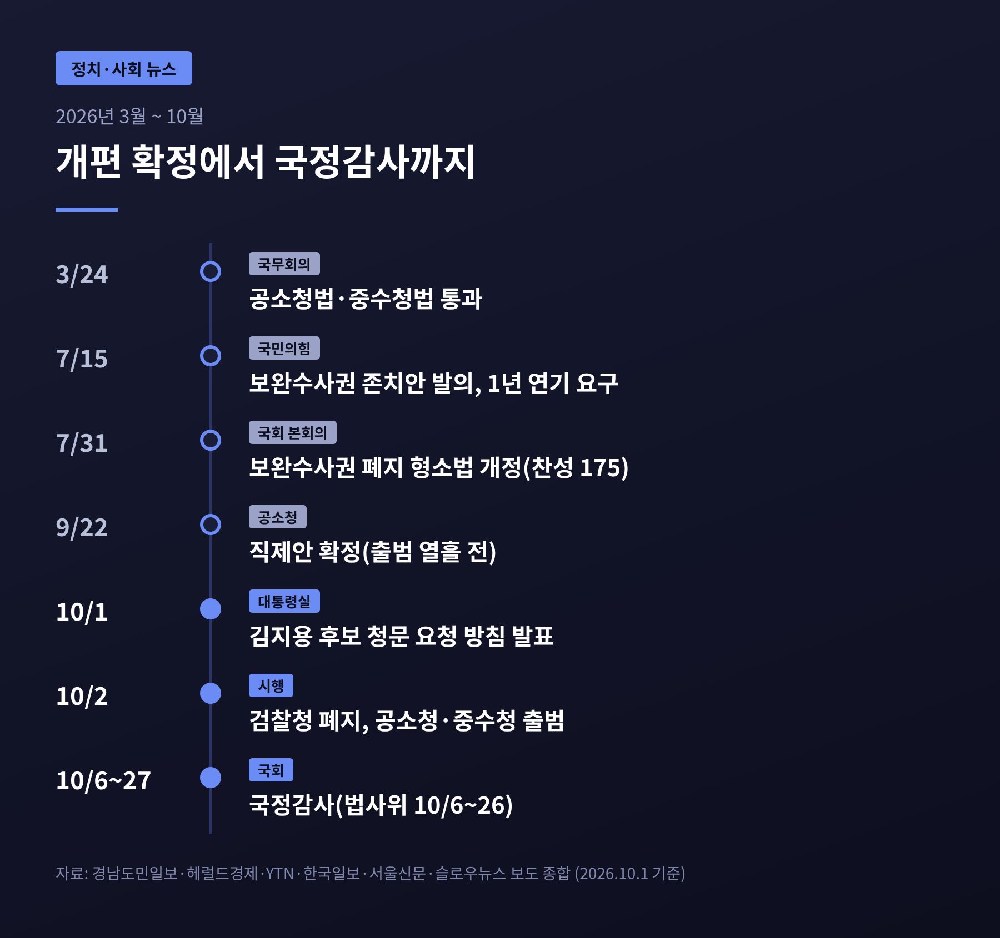

3줄 요약
오늘은 검찰청 폐지를 하루 앞둔 지금, 새 형사사법체계가 어디까지 준비됐는지 정리해 보려 합니다. 시행 일정과 조직 구조, 보완수사권을 둘러싼 여야 입장, 국정감사로 이어지는 정국을 차례로 살펴보겠습니다. 기사에 나온 사실과 수치를 근거로, 어느 한쪽에 치우치지 않게 적었습니다.
내일 검찰청이 문을 닫습니다. 그 자리에 기소를 맡는 공소청과 수사를 맡는 중대범죄수사청이 들어섭니다. 정부조직법과 공소청법·중수청법은 지난 3월 24일 국무회의를 통과했고, 공소청은 법무부 소속, 중수청은 행정안전부 소속으로 설계됐습니다.
예전엔 검찰이 수사와 기소를 모두 쥐었습니다. 이제는 경찰과 중수청이 수사하고, 공소청은 영장 청구와 기소, 공소 유지, 보완수사 요구를 맡습니다. 불송치 사건을 심사하는 기능도 새로 생겼습니다.
중수청의 수사 범위는 부패, 경제, 방위사업, 마약, 국가보호, 사이버범죄와 법왜곡죄입니다. 경제범죄는 피해액 5억 원을 기준으로 경찰과 나눠 맡고, 경찰이 접수한 중수청 관할 사건은 7일 안에 이첩 여부를 판단하도록 했습니다. 공소시효가 임박한 사건은 최대 90일까지 계속 수사할 수 있는 경과규정도 두었습니다.

검찰은 1948년 검찰청 출범 이후 수사와 기소를 함께 해 온 기관입니다. 한국일보 사설은 이번 개편을 두고 1954년 형사소송법 제정 이후 72년 만의 큰 변화라고 짚었습니다. 수사권과 기소권을 한 기관이 갖는 구조가 권한 집중과 견제 부재를 낳았다는 문제의식이 개편의 출발점이었습니다.
반대편에는 다른 걱정이 있습니다. 새 체계가 제대로 돌아가지 않으면 사건 처리가 늦어지고, 그 부담이 범죄 피해자와 국민에게 돌아간다는 것입니다. 그래서 이번 개편은 제도의 옳고 그름만이 아니라, 준비 상태와 운영 능력까지 함께 따져야 하는 사안이 됐습니다.
중수청의 총정원은 2,874명이고, 이 가운데 수사관은 2,567명으로 계획됐습니다. 본청과 서울·수원·대전·대구·부산·광주 6개 지방청 체제입니다. 그러나 1차 특례임용 1,761명에 2차 201명을 더해도 1,962명으로, 정원의 약 68%에 그칩니다. 5급 이상은 629명 중 212명만 채워졌다고 파이낸셜뉴스는 전했습니다.
시설과 시스템도 미완성입니다. 중수청이 입주할 서울 중구 르네스퀘어빌딩은 공사가 진행 중이고, 독자 전산망은 마련되지 않아 당분간 경찰 시스템을 빌려 씁니다. 한국일보는 독자 시스템 구축에 약 3년이 걸릴 것이라고 전했습니다.
법령과 직제 정비도 빠듯했습니다. 8월 중순까지도 150~180건의 하위법령 개정이 '취합 중'이었고, 법무부 관계자는 2021년 검경 수사권 조정 때도 규칙 정비에 몇 달이 걸렸는데 이번에는 한 달 안에 끝내야 한다고 말했습니다. 공소청 직제안은 출범을 열흘 앞둔 9월 22일에야 확정됐습니다.
매일일보는 정부가 공소청 검사 규모를 현행 정원의 80~85% 수준으로 낮췄고 수사관 인력은 68.6% 줄이기로 했다고 보도했습니다. 다만 이 수치는 이 한 곳의 보도이고 감축 기준이 분명하지 않아, 확정된 사실로 받아들이기보다 국정감사에서 확인될 대목으로 보는 편이 안전합니다.

출범을 앞둔 가장 눈에 띄는 대목은 지휘부입니다. 재경일보에 따르면 법무부는 이진수 차관이 장관 직무대행을 맡고 있습니다. 검찰은 이정현 대검 차장검사가 총장 직무대행이며, 총장 자리는 1년 2개월 넘게 비어 있습니다. 경찰청은 김종철 차장이 청장 직무대행입니다.
중수청도 사정이 같습니다. 초대 청장 후보로 지명된 김지용 변호사는 지명 20여 일이 지나도록 인사청문요청안이 국회에 넘어가지 않았습니다. 여권 강경파와 조국혁신당은 그를 검찰 출신의 '친윤' 인사로 규정하고, 검찰 재직 시 보완수사권 유지를 주장했다는 점을 문제 삼았다고 뉴데일리는 전했습니다.
이재명 대통령은 소셜미디어에서 검찰 출신이라는 이유만으로 배제하면 중수청 자체를 부정하는 것이라는 취지로 반박했습니다. 대통령실은 10월 1일 추가 검증에서도 달라진 점이 없다며 인사청문을 요청하겠다고 밝혔습니다. 국회 행정안전위 소속 민주당 의원들은 조속히 청문회에서 판단해야 한다는 입장이지만, 개청 전 임명이 불가능하니 조금 늦어도 문제없다는 목소리도 나왔습니다.
이근우 가천대 교수는 각 기관 수장을 조속히 임명해 체계를 안정시켜야 한다고 지적했습니다. 하위법령 정비와 기관 간 사건 이첩 조율이 직무대행 중심으로 진행되는 점이 부담이라는 것입니다.

핵심 쟁점은 보완수사권입니다. 지난 7월 31일 국회는 검사의 직접 보완수사권을 폐지하는 형사소송법 개정안을 처리했습니다. 출석 178명 중 찬성 175명, 반대 2명, 기권 1명이었고, 국민의힘은 표결에 참여하지 않았습니다. 검사는 대신 경찰에 보완수사를 요구할 수 있고, 기간은 1개월에 필요하면 1개월 연장됩니다.
정부·여당은 수사·기소 분리와 사법통제 강화를 취지로 내세웁니다. 경남도민일보에 따르면 법안에는 수사심사위원회 같은 감독 장치가 담겼고, 장관의 지휘도 일반적 사무 감독에 한정됩니다. 여권 내부에서도 초대 청장 인선을 두고는 이견이 드러났습니다.
국민의힘은 반대로 보완수사권 존치를 요구합니다. 7월 15일 당론으로 '범죄 피해자 보호 3법'을 발의해 보완수사권을 유지하고 출범을 1년 미루자고 했습니다. 10월 1일에는 중수청 앞에서 졸속 출범이라고 비판했습니다. 정점식 의원은 "내일 누가 이런 중대범죄를 밝혀낼 것이냐"고 물었고, 수사 지연으로 피의자 구속 기간이 끝나는 상황을 우려했습니다. 청장 공석과 공사 미완료, 유치시설 부재도 근거로 들었습니다.
두 주장은 모두 일리가 있습니다. 개혁 쪽은 권한 분산이라는 취지를, 비판 쪽은 이행 과정의 공백이라는 현실을 짚습니다. 다만 한국일보 사설이 지적한 사건 처리 지연이나 사건 암장 우려가 실제로 나타날지는 아직 확인되지 않았습니다. 시행 후 몇 달의 운영 데이터가 있어야 판단할 수 있습니다.

국정감사는 10월 6일부터 27일까지 열립니다. 17개 상임위에서 109개 일정이 잡혔고, 법사위는 10월 6일 대법원 감사로 시작해 26일 종료합니다. 폴리뉴스는 출범 나흘 뒤 국감이 시작되는 만큼 검찰개혁이 법사위의 핵심 쟁점이 될 것이라고 전했습니다.
여야 프레임은 이미 갈립니다. 민주당은 '정책국감·민생국감', 국민의힘은 '이재명 정부 7대 실정 심판'을 내걸었고, 조국혁신당은 검찰개혁 원칙에 집중한다는 방침입니다. 매일일보는 법사위가 사건 처리의 정상 이행, 경찰 불송치 사건 심사와 기소 판단 절차, 새 업무체계의 안착 가능성을 점검할 것이라고 전했습니다.
앞으로 지켜볼 지점은 세 가지입니다. 하나, 김지용 후보자 청문회가 언제 열리고 어떻게 결론 나는지. 둘, 중수청 충원율과 전산·청사 문제가 얼마나 빨리 풀리는지. 셋, 보완수사 요구가 1개월 기한 안에서 실제로 작동하는지입니다.

정리하면 이렇습니다. 제도의 방향을 둘러싼 논쟁과 준비 상태를 둘러싼 논쟁은 서로 다른 문제입니다. 앞의 것은 이미 법으로 정해졌고, 뒤의 것이 지금 시험대에 올랐습니다.
결국 남는 것은 하나입니다. "개편의 성패는 출범일이 아니라 출범 이후 몇 달의 운영에서 가려진다."
78년 만의 전환이 국민에게 어떤 체감으로 돌아올지 묻는다면, 지금으로서는 국정감사와 첫 분기의 사건 처리 현황을 지켜보자고 답하겠습니다.
※ 이 글은 2026년 10월 1일까지의 보도를 바탕으로 정리했으며, 이후 상황에 따라 내용이 달라질 수 있습니다.